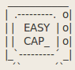
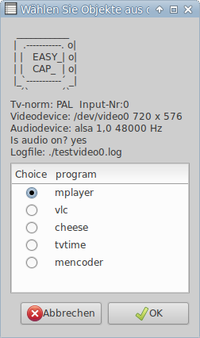

Easycap Skript
Dieser Artikel wurde für die folgenden Ubuntu-Versionen getestet:
Dieser Artikel ist mit keiner aktuell unterstützten Ubuntu-Version getestet! Bitte diesen Artikel testen und das getestet-Tag entsprechend anpassen.
Zum Verständnis dieses Artikels sind folgende Seiten hilfreich:

Dieses Skript erleichtert das Betrachten und Aufnehmen mit dem USB Audio- und Videograbber EasyCAP DC60. Vor dem Start des Betrachter- bzw. Aufnahmeprogramms führt es noch einige Tests durch. Das Ergebnis wird im Programmauswahlfenster oben angezeigt.
Damit es funktioniert muss das Paket zenity und mindestens eines der Betrachterprogramme vlc, mplayer, tvtime oder cheese und mencoder für die Aufnahme installiert sein.
Quelltext¶
Download des Skripts: easyview-n-cap-0.9.1.sh 
1 2 3 4 5 6 7 8 9 10 11 12 13 14 15 16 17 18 19 20 21 22 23 24 25 26 27 28 29 30 31 32 33 34 35 36 37 38 39 40 41 42 43 44 45 46 47 48 49 50 51 52 53 54 55 56 57 58 59 60 61 62 63 64 65 66 67 68 69 70 71 72 73 74 75 76 77 78 79 80 81 82 83 84 85 86 87 88 89 90 91 92 93 94 95 96 97 98 99 100 101 102 103 104 105 106 107 108 109 110 111 112 113 114 115 116 117 118 119 120 121 122 123 124 125 126 127 128 129 130 131 132 133 134 135 136 137 138 139 140 141 142 143 144 145 146 147 148 149 150 151 152 153 154 155 156 157 158 159 160 161 162 163 164 165 166 167 168 169 170 171 172 173 174 175 176 177 178 179 180 181 182 183 184 185 186 187 188 189 190 191 192 193 194 195 196 197 198 199 200 201 202 203 204 205 206 207 208 209 210 211 212 213 214 215 216 217 218 219 220 221 222 223 224 225 226 227 228 229 230 231 232 233 234 235 236 237 238 239 240 241 242 243 244 245 246 247 248 249 250 251 252 253 254 255 256 257 258 259 260 261 262 263 264 265 266 267 268 269 270 271 272 273 274 275 276 277 278 279 280 281 282 283 284 285 286 287 288 289 290 291 292 293 294 295 296 297 298 299 300 301 302 303 304 305 306 307 308 309 310 311 312 313 314 315 316 317 318 319 320 321 322 323 324 325 326 327 328 329 330 331 332 333 334 335 336 337 338 339 340 341 342 343 344 345 346 347 348 349 350 351 352 353 354 355 356 357 358 359 360 361 362 363 364 365 366 367 368 369 370 371 372 373 374 375 376 377 378 379 380 381 382 383 384 385 386 387 388 389 390 391 392 393 394 395 396 397 398 399 400 401 402 403 404 405 406 407 408 409 410 411 412 413 414 415 416 417 418 419 420 421 422 423 424 425 426 427 428 429 430 431 432 433 434 435 436 437 438 439 440 441 442 443 444 445 446 447 448 449 450 451 452 453 454 455 456 457 458 459 460 461 462 463 464 465 466 467 468 469 470 471 472 473 474 475 476 477 478 479 480 481 482 483 484 485 486 487 488 489 490 491 492 493 494 495 496 497 498 499 500 501 502 503 504 505 506 507 508 509 510 511 512 513 514 515 516 517 518 519 520 521 522 523 524 525 526 527 528 529 530 531 532 533 534 535 536 537 538 | #!/bin/bash # # easyview-n-cap.0.9.1 by andlandl (http://wiki.ubuntuusers.de/EasyCAP_DC60_USB_Audio_und_Videograbber/Easycap_Skript) # Date: 08.03.2012 # The first part of the script is based on the test scripts by Mike Thomas coming with the easycap driver source # http://sourceforge.net/projects/easycapdc60/, # the second part (recording section) is mainly the same than in the previous version of this script. # The ascii artwork is based on a template i found here: http://www.retrojunkie.com/asciiart/electron/tv.txt # For more information view # http://easycap.blogspot.com # Contact: easycapdc60-blogspot@yahoo.de #----------------------------------------------------------------------------- # # Basic options # # preselect parameters for viewing/ capturing # change these parameters according to your needs #----------------------------------------------------------------------------- VERBOSE=1 # if '0', this script does not show messages window and does not ask for norm and input number anymore NORM="PAL" # preselect tv norm 'PAL' or 'NTSC' INPUT_NR=0 # preselect input number of your easycap where video source is plugged in input_width=720 # preselect width an height of video source (mplayer, vlc, mencoder) input_height=576 # other possible combinations: 640/480; 320/240 ASPECT=169 # '169' (16:9) or '43' (4:3); this value affects video playback with mplayer or vlc only! #----------------------------------------------------------------------------- #----------------------------------------------------------------------------- MESSAGE=() R_MESAGE=() EXITCODE=0 #----------------------------------------------------------------------------- #----------------------------------------------------------------------------- # frequency check # # Requires that precisely one EasyCAP is plugged in. #----------------------------------------------------------------------------- MANY=`2>/dev/null lsusb -v -d 05e1:0408 | grep tSamFreq | wc -l ` if [ "x" = "x${MANY}" ]; then MESSAGE=("${MESSAGE[@]}" "\nERROR: cannot count 05e1:0408 EasyCAPs") EXITCODE=1 # # exit 1 fi if [ "0" = "${MANY}" ]; then MESSAGE=("${MESSAGE[@]}" "\nERROR: No 05e1:0408 EasyCAP found. Is it plugged in? Is it a Syntek?") EXITCODE=1 # # exit 1 fi if [ "1" != "${MANY}" ]; then MESSAGE=("${MESSAGE[@]}" "\nERROR: Too many 05e1:0408 EasyCAPs found: one at a time, please") EXITCODE=1 # # exit 1 fi FREQ="" FREQ=`2>/dev/null lsusb -v -d 05e1:0408 | grep tSamFreq | sed -e "s,^.* ,,"` if [ "x${FREQ}" = "x8000" ]; then FREQ=32000; fi if [ "x${FREQ}" = "x48000" ]; then FREQ=48000; fi if [ "x" = "x${FREQ}" ]; then MESSAGE=("${MESSAGE[@]}" "\nERROR: could not identify audio frequency") if_audio="no" # exit 1 fi echo "Audio frequency is ${FREQ} Hz" #----------------------------------------------------------------------------- #----------------------------------------------------------------------------- # videodevices check #----------------------------------------------------------------------------- declare -i i0 declare -i i1 declare -i i2 declare -i i3 ls /dev/easy* /dev/video* /proc/asound/* >/dev/null 2>/dev/null DEV_VIDEO="" DEV_AUDIO="" i0=0; while [ -z ${DEV_VIDEO} ]; do if [ -c "/dev/easycap${i0}" ]; then DEV_VIDEO="/dev/easycap${i0}"; break fi if [ -h "/dev/easycap${i0}" ]; then DEV_VIDEO="/dev/easycap${i0}"; break fi if [ 8 -eq ${i0} ]; then DEV_VIDEO="NONE"; fi i0=$i0+1 done if [ "NONE" = "${DEV_VIDEO}" ]; then DEV_VIDEO=""; fi #----------------------------------------------------------------------------- # REMOVE THE FOLLOWING SECTION TO PREVENT THIS SCRIPT FROM LOOKING FOR # /dev/video* WHENEVER /dev/easycap* CANNOT BE FOUND. #============================================================================= i1=0; while [ -z ${DEV_VIDEO} ]; do if [ -c "/dev/video${i1}" ]; then DEV_VIDEO="/dev/video${i1}"; i0=${i1}; break fi if [ 8 -eq ${i1} ]; then DEV_VIDEO="NONE"; fi i1=$i1+1 done if [ "NONE" = "${DEV_VIDEO}" ]; then DEV_VIDEO=""; fi #============================================================================= if [ -z ${DEV_VIDEO} ]; then MESSAGE=("${MESSAGE[@]}" "\nCannot find /dev/easycap*, /dev/video*") EXITCODE=1 fi #----------------------------------------------------------------------------- #----------------------------------------------------------------------------- # check for OSS audio devices #----------------------------------------------------------------------------- if_audio="yes" i2=0; while [ -z ${DEV_AUDIO} ]; do if [ -c "/dev/easysnd${i2}" ]; then DEV_AUDIO="/dev/easysnd${i2}"; fi if [ 8 -eq ${i2} ]; then DEV_AUDIO="NONE"; fi i2=$i2+1 done AUDIO_TYPE="oss" if [ "NONE" = "${DEV_AUDIO}" ]; then DEV_AUDIO=""; fi #if [ -z ${DEV_AUDIO} ]; then #AUDIO_TYPE="" #if_audio="no" # MESSAGE=("${MESSAGE[@]}" "\nCannot find /dev/easysnd*") #fi i3=0; while [ -z ${DEV_AUDIO} ]; do if [ -c "/dev/easyoss${i3}" ]; then DEV_AUDIO="/dev/easyoss${i3}"; fi if [ 8 -eq ${i3} ]; then DEV_AUDIO="NONE"; fi i3=$i3+1 done AUDIO_TYPE="oss" if [ "NONE" = "${DEV_AUDIO}" ]; then DEV_AUDIO=""; fi #if [ -z ${DEV_AUDIO} ]; then #AUDIO_TYPE="" # MESSAGE=("${MESSAGE[@]}" "\nCannot find /dev/easyoss*") # if_audio="no" #fi if [ -z ${DEV_AUDIO} ]; then AUDIO_TYPE="" MESSAGE=("${MESSAGE[@]}" "\nCannot find OSS sound device") if_audio="no" fi #----------------------------------------------------------------------------- #----------------------------------------------------------------------------- # check if easycap devices are read/writeable #----------------------------------------------------------------------------- if [ -z ${DEV_VIDEO} ]; then MESSAGE=("${MESSAGE[@]}" "\nNo videodevice!") EXITCODE=1 elif [ -r ${DEV_VIDEO} ] && [ -w ${DEV_VIDEO} ]; then MESSAGE=("${MESSAGE[@]}" "\n${DEV_VIDEO} is accessible by user!") elif [ -e ${DEV_VIDEO} ]; then zenity --info --text "Cannot access ${DEV_VIDEO}! \nRun 'chmod a+rw ${DEV_VIDEO}'\nas root from the commandline\nor reinstall driver! " --title "Message" EXITCODE=1 fi if [ -r ${DEV_AUDIO} ] && [ -w ${DEV_AUDIO} ]; then MESSAGE=("${MESSAGE[@]}" "\n${DEV_AUDIO} is accessible by user!") elif [ -e ${DEV_AUDIO} ]; then zenity --info --text "\n!!! ${DEV_AUDIO} is NOT accessible by user! \nRun 'chmod a+rw ${DEV_AUDIO}'\nas root from the commandline\notherwise you will hear no sound" --title "Message" MESSAGE=("${MESSAGE[@]}" "\n!!! ${DEV_AUDIO} is NOT accessible by user! \nRun 'chmod a+rw ${DEV_AUDIO}'\nas root from the commandline\notherwise you will hear no sound") if_audio="no" fi #----------------------------------------------------------------------------- #----------------------------------------------------------------------------- # check for ALSA audio device #----------------------------------------------------------------------------- while [ -z ${DEV_AUDIO} ]; do AUDIO_TYPE="alsa"; if_audio="yes"; i0=0; if [ -z "`ls -1 /proc/asound`" ]; then MESSAGE=("${MESSAGE[@]}" "\nERROR: empty /proc/asound") fi link=`ls -lart /proc/asound | grep "EasyALSA${i0}" - ` if [ -z "${link}" ]; then MESSAGE=("${MESSAGE[@]}" "\nERROR: missing /proc/asound/EasyALSA${i0}") fi hwnr=`echo ${link} | sed -e "s,^.*-> ,,;s,card,," ` card=/proc/asound/`echo ${link} | sed -e "s,^.*-> ,," ` if [ ! -d "${card}" ]; then MESSAGE=("${MESSAGE[@]}" "\nERROR: absent or bad card: ${card}") fi if [ ! -d "${card}/pcm0c" ]; then MESSAGE=("${MESSAGE[@]}" "\nERROR: absent or bad pcm: ${card}/pcm0c") fi if [ -z "${hwnr}" ]; then MESSAGE=("${MESSAGE[@]}" "\nERROR: absent or bad card number: ${hwnr}") if_audio="no" AUDIO_TYPE="" MESSAGE=("${MESSAGE[@]}" "\nEasycap ALSA audio is not supported") fi DEV_AUDIO="${hwnr},0" done #echo "Video device is ${DEV_VIDEO}" #echo "Audio device is ${DEV_AUDIO}" #echo "Audio? ${if_audio}" #echo "Audio system ${AUDIO_TYPE}" #----------------------------------------------------------------------------- #----------------------------------------------------------------------------- # find executable programs #----------------------------------------------------------------------------- PROG_LIST=( TRUE mplayer # FALSE vlc # FALSE cheese # FALSE tvtime # FALSE mencoder # FALSE sox # ) PROGS=(mplayer vlc cheese tvtime mencoder sox) i4=0 for P in ${PROGS[@]}; do PROG=`which $P` if [ "x" = "x${PROG}" ] || [ ! -x ${PROG} ]; then echo "Cannot find or execute $P. Is it installed?" MESSAGE=("${MESSAGE[@]}" "\nCannot find or execute $P. Is it installed?") PROG_LIST[$i4]="" PROG_LIST[$i4+1]="" if [ "${PROG_LIST[11]}" = "" ]; then echo "Sox is needed for sound with tvtime!" MESSAGE=("${MESSAGE[@]}" "\nSox is needed for sound with tvtime!") fi fi i4=$i4+2 done PROG_LIST[10]="" # sox will not show up on zenity list PROG_LIST[11]="" # #----------------------------------------------------------------------------- #----------------------------------------------------------------------------- # display messages and exit if something went wrong #----------------------------------------------------------------------------- if [ ${EXITCODE} = 1 ]; then MESSAGE=("${MESSAGE[@]}" "\nScript will exit") fi echo ${MESSAGE[*]} ######################### if [ ${VERBOSE} = 1 ]; then zenity --info --text "${MESSAGE[*]}" --title "Messages" fi if [ ${EXITCODE} = 1 ]; then exit 1 fi #----------------------------------------------------------------------------- #----------------------------------------------------------------------------- # create logfile #----------------------------------------------------------------------------- LOGFILE="./test`echo "${DEV_VIDEO}" | sed -e "s,/dev/,," - `.log" echo "Log file is: ${LOGFILE}" #----------------------------------------------------------------------------- #----------------------------------------------------------------------------- # display zenity list to select program #----------------------------------------------------------------------------- view_cap=$(zenity --list --width=250 --height=400 --text " ___________\n | .-----------. o|\n | | EASY_| o|\n | | CAP_ | o|\n |_\`-----------´ _|\n ´\` ´\`\\nTv-norm: $NORM Input-Nr:$INPUT_NR\nVideodevice: $DEV_VIDEO $input_width x $input_height \nAudiodevice: $AUDIO_TYPE $DEV_AUDIO $FREQ Hz\nIs audio on? $if_audio\nLogfile: $LOGFILE " --radiolist --column "Choice" --column "program" ${PROG_LIST[@]}) || exit 0 # echo $view_cap #----------------------------------------------------------------------------- if [ ${VERBOSE} = 1 ]; then #----------------------------------------------------------------------------- # select tv norm #----------------------------------------------------------------------------- title="Select tv norm" NORM=`zenity --width="300" --height="150" --title="$title" --list --radiolist --column="Click Here" \ --column="Norm" --column="Description" \ TRUE "PAL" "PAL Norm" \ FALSE "NTSC" "NTSC Norm" \ ` || exit 0 echo "$NORM chosen as the tv norm." #----------------------------------------------------------------------------- # select input number #----------------------------------------------------------------------------- title="Select input NR" INPUT_NR=`zenity --width="450" --height="150" --title="$title" --list --radiolist --column="Click Here" \ --column="Channel" --column="Description" \ TRUE "0" "CVBS - DC60" \ FALSE "1" "CVBS1 - 002" \ FALSE "2" "CVBS2 - 002" \ FALSE "3" "CVBS3 - 002" \ FALSE "4" "CVBS4 - 002" \ FALSE "5" "S-Video - DC60" ` || exit 0 # echo "chosen input:$INPUT_NR" fi #----------------------------------------------------------------------------- #----------------------------------------------------------------------------- # mplayer command #----------------------------------------------------------------------------- if [ "alsa" = "${AUDIO_TYPE}" ]; then M_AUDIO="buffersize=16:alsa:amode=1:forcechan=2:audiorate=${FREQ}:adevice=plughw.${DEV_AUDIO}" elif [ "oss" = "${AUDIO_TYPE}" ]; then M_AUDIO="adevice=${DEV_AUDIO}" fi if [ "$NORM" = "PAL" ]; then fps_count=25 else fps_count=30 fi # echo $M_AUDIO if [ "mplayer" = "${view_cap}" ]; then if [ "$ASPECT" = 169 ]; then M_ASPECT="-aspect 1.78" elif [ "$ASPECT" = 43 ]; then M_ASPECT="-aspect 1" else M_ASPECT="" fi if [ "$if_audio" = "yes" ]; then 1>${LOGFILE} 2>&1 \ mplayer tv:// -tv driver=v4l2:norm=${NORM}:width=${input_width}:height=${input_height}:outfmt=uyvy:device=${DEV_VIDEO}:input=${INPUT_NR}:fps=${fps_count}:${M_AUDIO}:forceaudio:immediatemode=0 -hardframedrop ${M_ASPECT} -ao sdl,${AUDIO_TYPE} -msglevel all=9 elif [ "$if_audio" = "no" ]; then 1>${LOGFILE} 2>&1 \ mplayer tv:// -tv driver=v4l2:norm=${NORM}:width=${input_width}:height=${input_height}:outfmt=uyvy:device=${DEV_VIDEO}:input=${INPUT_NR}:fps=${fps_count} -hardframedrop ${M_ASPECT} -msglevel all=9 -nosound fi fi #----------------------------------------------------------------------------- #----------------------------------------------------------------------------- # vlc command #----------------------------------------------------------------------------- if [ "vlc" = "${view_cap}" ]; then if [ "alsa" = "${AUDIO_TYPE}" ]; then V_AUDIO="//plughw:${DEV_AUDIO}" elif [ "oss" = "${AUDIO_TYPE}" ]; then V_AUDIO="//${DEV_AUDIO}" fi if [ "$NORM" = "PAL" ]; then V_NORM="pal" elif [ "$NORM" = "NTSC" ]; then V_NORM="ntsc" fi if [ "$ASPECT" = 169 ]; then V_ASPECT="--aspect-ratio=16:9" elif [ "$ASPECT" = 43 ]; then V_ASPECT="--aspect-ratio=4:3" else V_ASPECT="" fi 1>${LOGFILE} 2>&1 \ vlc -vvv v4l2://${DEV_VIDEO}:input=${INPUT_NR}:width=$input_width:height=$input_height:norm=${V_NORM} ${V_ASPECT} :input-slave=${AUDIO_TYPE}:${V_AUDIO} --demux rawvideo fi #----------------------------------------------------------------------------- #----------------------------------------------------------------------------- # tvtime command #----------------------------------------------------------------------------- if [ "tvtime" = "${view_cap}" ]; then if [ "alsa" = "${AUDIO_TYPE}" ]; then T_AUDIO="-t alsa plughw:${DEV_AUDIO} -s2 -c 2 -r ${FREQ} -s2 -t alsa default" elif [ "oss" = "${AUDIO_TYPE}" ]; then T_AUDIO="-t raw -s2 ${DEV_AUDIO} -c 2 -r ${FREQ} -s2 -t ossdsp /dev/dsp" fi echo $T_AUDIO 1>${LOGFILE} 2>&1 \ >./tvtime.err (tvtime -d ${DEV_VIDEO} -i 0 -n "${NORM}" 1>/dev/null 2>>./tvtime.err) & rc=1 while [ 0 -ne ${rc} ]; do tvtime-command run_command "(sox -c 2 -r ${FREQ} ${T_AUDIO} 1>/dev/null 2>>./tvtime.err)" 1>/dev/null 2>>./tvtime.err rc=$? if [ 0 -eq ${rc} ]; then break; fi sleep 0.5 done fi #----------------------------------------------------------------------------- #----------------------------------------------------------------------------- # cheese command #----------------------------------------------------------------------------- if [ "cheese" = "${view_cap}" ]; then 1>${LOGFILE} 2>&1 \ cheese -d ${DEV_VIDEO} | tee ${LOGFILE} fi #----------------------------------------------------------------------------- #----------------------------------------------------------------------------- # mencoder command - recording section #----------------------------------------------------------------------------- if [ "mencoder" = "${view_cap}" ]; then #Which aspect should have the target file? title="Chose aspect of your target file!" aspect_type=`zenity --width="400" --height="220" --title="$title" --list --radiolist --column="Click Here" \ --column="choice" --column="source >> target" \ TRUE "1" "4:3 > 4:3"\ FALSE "2" "4:3 > scale=16:9" \ FALSE "3" "4:3 > crop borders=16:9" \ ` || exit 0 if [ "$aspect_type" = "1" ]; then crop_scale="scale=640:480" elif [ "$aspect_type" = "2" ]; then crop_scale="scale=720:406" elif [ "$aspect_type" = "3" ]; then crop_scale="crop=720:406:0:72" fi #when cancel is pressed if [ "$aspect_type" = "" ]; then zenity --error --title="Stop" --text="Script stopped!" exit fi ################################################################################# #Quality? title="What quality do you want to record at ?" qual_type=`zenity --width="380" --height="380" --title="$title" --list --radiolist --column="Click Here" \ --column="Record Time" --column="Description" \ FALSE "500" "Passable Quality"\ FALSE "900" "OK Quality"\ FALSE "1100" "VHS Quality"\ TRUE "1300" "SVHS Quality"\ FALSE "1500" "VCD Quality"\ FALSE "1800" "SVCD Quality" \ FALSE "2000" "Very Good Quality"\ FALSE "2500" "High Quality" \ FALSE "3000" "Excellent Quality"\ ` || exit 0 #when cancel is pressed if [ "$qual_type" = "" ]; then zenity --error --title="Stop" --text="Script stopped!" exit fi ################################################################################## #How Long? title="How long do you want to record for ?" time_type=`zenity --width="380" --height="500" --title="$title" --list --radiolist --column="Click Here" \ --column="Record Time" --column="Description" \ FALSE "00:00:00" "unlimited"\ TRUE "00:00:30" "30 seconds for testing"\ FALSE "00:10:00" "0.2 hours"\ FALSE "00:30:00" "0.5 hours"\ FALSE "00:45:00" "0.75 hours"\ FALSE "01:00:00" "1 hour"\ FALSE "01:15:00" "1.25 hours"\ FALSE "01:30:00" "1.5 hours" \ FALSE "01:45:00" "1.75 hours"\ FALSE "02:00:00" "2 hours" \ FALSE "02:15:00" "2.25 hours"\ FALSE "02:30:00" "2.5 hours" \ FALSE "02:45:00" "2.75 hours"\ FALSE "03:00:00" "3 hours" \ FALSE "03:15:00" "3.25 hours" \ FALSE "03:30:00" "3.5 hours" \ ` || exit 0 M_TIME="-endpos $time_type" #when cancel is pressed if [ "$time_type" = "" ]; then zenity --error --title="Stop" --text="Script was terminated!" exit elif [ "$time_type" = "00:00:00" ]; then M_TIME="" fi ################################################################################# #user must enter a filename filedate=$(date +%F_%H:%M-%S) title="Please enter a filename for your recording, no spaces" file_name=`zenity --width="480" --height="150" --title="$title" --file-selection --save --confirm-overwrite --filename="easyrecord_$filedate"` || exit 0 #when cancel is pressed if [ "$file_name" = "" ]; then zenity --error --title="Stop" --text="Script stopped!" exit fi ########################################################################################### # summary R_MESSAGE=("${R_MESSAGE[@]}" "\nRecording options:") R_MESSAGE=("${R_MESSAGE[@]}" "\nRecording audio: $if_audio") R_MESSAGE=("${R_MESSAGE[@]}" "\nRecording from Input $INPUT_NR - Norm: $NORM $fps_count fps") R_MESSAGE=("${R_MESSAGE[@]}" "\nCrop and scale options: $crop_scale") R_MESSAGE=("${R_MESSAGE[@]}" "\nEncoding quality: $qual_type kb/s") R_MESSAGE=("${R_MESSAGE[@]}" "\nRecording time:$time_type hours") R_MESSAGE=("${R_MESSAGE[@]}" "\nFile name: $file_name.avi ") echo ${R_MESSAGE[*]} if [ ${VERBOSE} = 1 ]; then zenity --info --text "${R_MESSAGE[*]}" --title "Recording options" fi #----------------------------------------------------------------------------- #----------------------------------------------------------------------------- # mencoder line #----------------------------------------------------------------------------- if [ "$if_audio" = "yes" ]; then zenity --info --title="Start recording with audio" --text="Press ok to start recording" mencoder tv:// -tv driver=v4l2:norm=$NORM:width=$input_width:height=$input_height:outfmt=uyvy:device=${DEV_VIDEO}:input=${INPUT_NR}:fps=$fps_count:${M_AUDIO}:forceaudio:immediatemode=0 -msglevel all=9 -ovc lavc -ffourcc DX50 -lavcopts vcodec=mpeg4:mbd=2:turbo:vbitrate=$qual_type:keyint=15 -vf pp=lb,$crop_scale -oac mp3lame $M_TIME -o $file_name.avi | tee ${LOGFILE} | zenity --progress --pulsate --auto-close --auto-kill --text="Processing Video - length: $time_type hours" zenity --info --title="Job complete" --text="The recording is now complete." elif [ "$if_audio" = "no" ]; then zenity --info --title="Start recording without audio" --text="Press ok to start recording" 1>${LOGFILE} 2>&1 \ mencoder tv:// -tv driver=v4l2:norm=$NORM:width=$input_width:height=$input_height:outfmt=uyvy:device=${DEV_VIDEO}:input=${INPUT_NR}:fps=$fps_count -msglevel all=9 -nosound -ovc lavc -ffourcc DX50 -lavcopts vcodec=mpeg4:mbd=2:turbo:vbitrate=$qual_type:keyint=15 -vf pp=lb,$crop_scale -endpos $time_type -o $file_name.avi | tee ${LOGFILE} | zenity --progress --pulsate --auto-close --auto-kill --text="Processing Video - length: $time_type hours" zenity --info --title="Job complete" --text="The recording is now complete." fi fi exit 1 |
Installation¶
Um das Skript nutzen zu können, muss es nach dem Download noch mit dem Befehl
chmod a+x easyview-n-cap-0.9.sh
ausführbar gemacht werden. Anschließend kann es in einem Terminal oder einfach durch einen Doppelklick gestartet werden. 
Einstellungen im Skript¶
Im oberen Bereich des Quelltextes können einige Parameter die die Videoquelle betreffen voreingestellet werden, dazu muss das Skript in einem Editor bearbeitet werden. Wenn die Variable
1 | verbose=0 |
auf 0 gestellt ist, werden einige Statusmeldungen nicht angezeigt.
Nutzung¶
Nach dem Start des Skripts werden einige Auswahldialoge zur Einstellung des Video- und Audioeingangs angezeigt. Dann öffnet sich das Programmauswahlfenster (siehe Bild). In oberen Bereich zeigt dieses die eingestellten Parameter. Im unteren Bereich kann in einer Liste eines der installierten Betrachterprogramme ausgewählt werden. Wird mencoder gewählt, dann öffnen sich einige weitere Dialoge in denen die Aufnahmeeinstellungen angegeben werden.
Logfile¶
Das Skript erstellt zu Diagnosezwecken in dem Ordner in dem es gespeichert ist ein Logfile in das die Statusmeldungen des vom Skript aufgerufenen Betrachterprogramms geschrieben werden.
- Erstellt mit Inyoka
-
 2004 – 2017 ubuntuusers.de • Einige Rechte vorbehalten
2004 – 2017 ubuntuusers.de • Einige Rechte vorbehalten
Lizenz • Kontakt • Datenschutz • Impressum • Serverstatus -
Serverhousing gespendet von